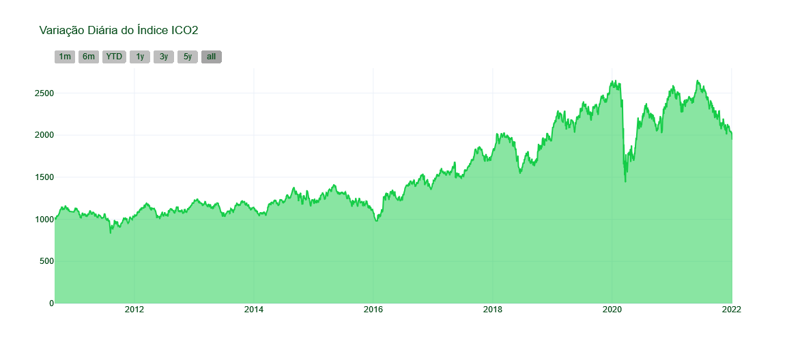
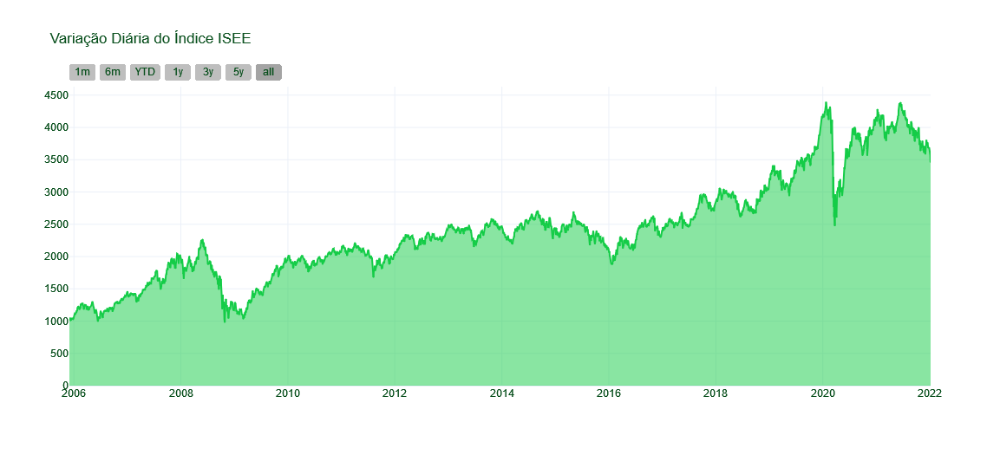
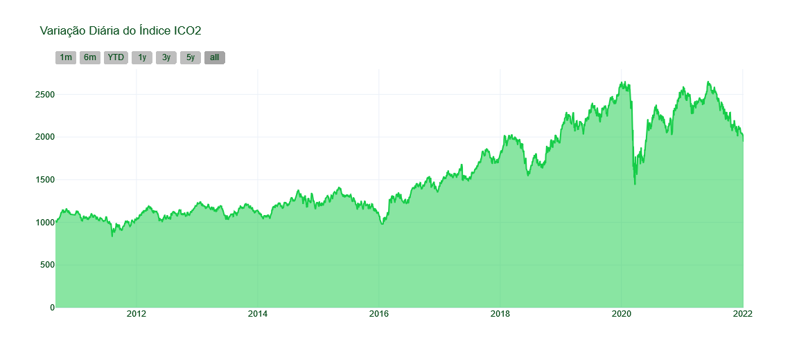
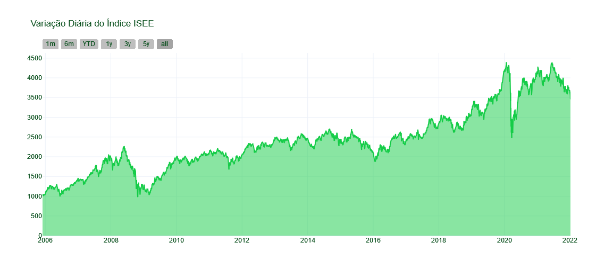
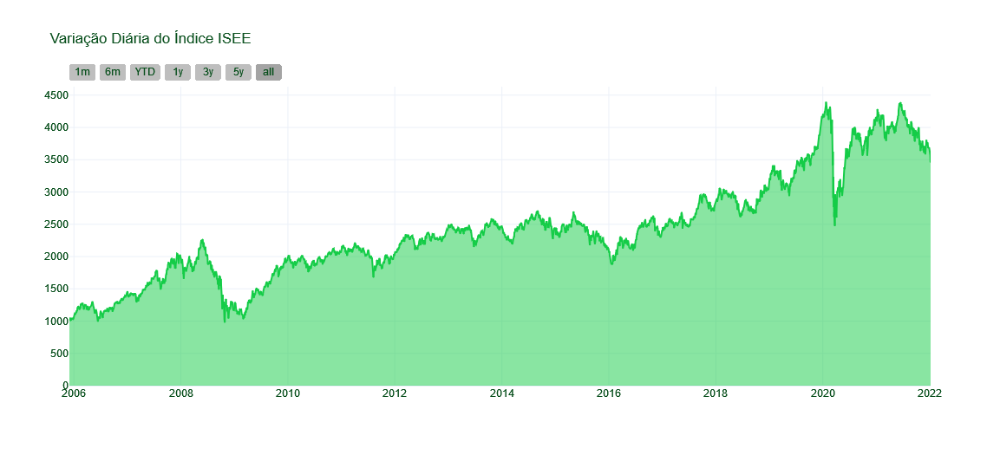
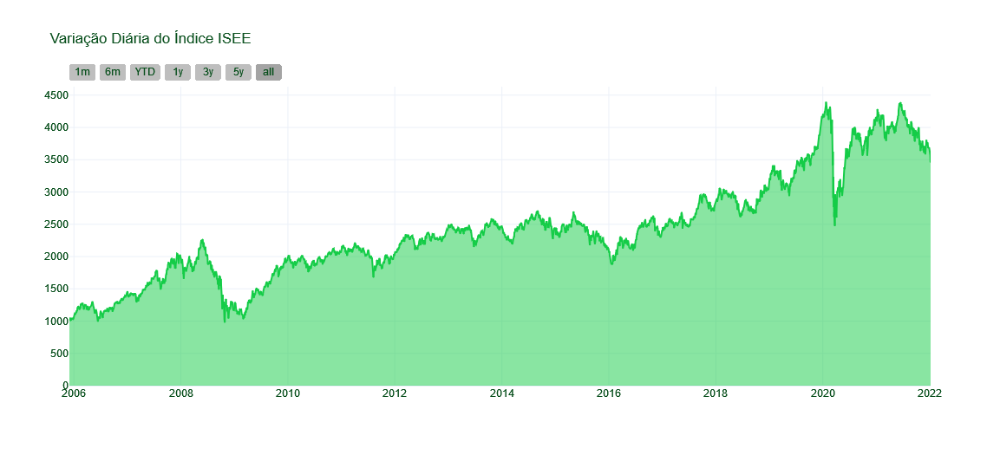

UMA NOVA FORMA DE INVESTIR
Para além da economia
Fatores ambientais, sociais e de governança estão ganhando importância em toda a sociedade e também nos investimentos. Saiba mais sobre essa relação ao entender as alternativas ESG!

Conheça mais sobre o mercado
ESG é a sigla em inglês para "environmental, social and governance" (ambiental, social e governança, em português). Através dessa abordagem é possível ampliar a perspectiva de análise do negócio para além das métricas financeiras.
Environmental
Responsabilidade ambiental
Prática da gestão de resíduos e de emissão de gases; uso de materiais certificados; fomento ao reflorestamento; incentivo a ações sustentáveis como a reciclagem.
Social
Responsabilidade social
Fomento à diversidade e à inclusão; parceira com ONG's; garantia de programas de apoio, desenvolvimento e capacitação aos colaboradores; promoção de campanhas de conscientização e incentivo a doações e trabalhos voluntários.
Governance
Responsabilidade ambiental
Transparência das relações e prestação de contas; combate à corrupção e crimes; incentivo à comunicação entre setores; fomento a melhoria da gestão; integridade nos processos.
Por que pensar em ESG?
ESG nas empresas é cada vez mais reconhecida por governos e por quem se interessa em agir social e ambientalmente. As medidas ESG promovem a diminuição de gastos, pois muitas delas reduzem custos com energia, materiais, máquinas e desperdícios. Ademais, a incorporação de medidas sustentáveis à estratégia e modelo de negócios das organizações beneficia as parcerias entre empresas no mundo inteiro.
Mercado ESG Nacional
Vista de gráfico
Um mapeamento realizado pela Associação Brasileira das Entidades dos Mercados Financeiro e de Capitais (Anbima) demonstrou um aumento significativo no ano de 2020 de empresas que se denominavam sustentáveis em relação ao ano anterior.
 



 

Notícias em destaque

Santander Brasil lança CDB Verde
"O CDB Baixo Carbono quebra um paradigma importante, porque mostra que é possível fazer uma boa gestão financeira e, simultaneamente, apoiar a agenda ESG."
Luiz Masagão, diretor de tesouraria do Santander Brasil.
A gigante catarinense WEG é um dos exemplos em sustentabilidade
"Otimizamos recursos, reduzimos custos, racionalizamos despesas e buscamos sempre o menor impacto ambiental em nossas operações."
Hilton José da Veiga Faria, diretor de RH e sustentabilidade do grupo WEG.
Natura lança Biome, marca de produtos em barra e zero plástico
"Esse produto olhou para diversos desafios, um deles é a lógica de sistemas agroflorestais de modo que não haja uso de agrotóxico. Além do menor uso de água, na sustentabilidade"
Andrea Álvares, vice-presidente de marca, inovação e sustentabilidade da Natura.
Lojas Renner inclui agenda de 2021 para sustentabilidade
"Chegamos a um total de 130 milhões de peças com alguma matéria-prima menos impactante, 75 milhões delas em 2020."
Eduardo Ferlauto, gerente geral de sustentabilidade da Renner.Qual seu perfil de investidor?
Você sabe o seu tipo de investidor? Não sabe por onde começar? A gente te ajuda!
O iniciante
É mais conservador, preza por estabilidade, e quase não tolera riscos.
Prioriza segurança.
Não deseja que seu capital sofra perdas.
Aplicações em renda fixa estão entre as favoritas.
O moderado
Transita entre “o iniciante” e “o arrojado” e entende um pouco do mercado.
Sabe dosar a quantidade de risco a qual deseja se expor.
Privilegia a segurança, mas gosta de turbinar seus rendimentos com uma exposição controlada de riscos.
Não se importará com pequenas variações no montante investido.
O arrojado
Seu objetivo é a rentabilidade a longo prazo, você já é acostumado com riscos..
Busca sempre um bom assessor de investimentos para auxiliá-lo em suas decisões.
Costuma aplicar boa parte de seu capital em investimentos de renda variável.
Se dedica muito mais que os outros perfis para obter os melhores rendimentos de suas aplicações.
Ainda está com dúvida de qual o seu perfil?
Descubra gratuitamente o seu perfil de investidor.